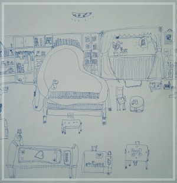

〝庭煒的小小故事〞
天地無情，庭煒卻樂觀地接受三年不間斷的艱辛療程，她雖身不由己，心郤有如旭日初昇的太陽；她的堅強抗癌決心與毅力，樂觀的面對自己的疾病與治療，她懂得愛與感恩，知道努力不懈地追求她想過的生活，珍惜難能可貴的自在時光，她的勇敢與熱愛生命的熱誠，就像她的畫一樣充滿生趣，流暢的線條，成熟的風貌，與亮麗的油彩，一點都沒有生病的陰影與恐懼！她並沒有被逆境擊敗，反而創造了生命的價值！她短暫的一生，為「我們雖然不能決定生命的長度，但是我們可以決定生命的深度與廣度；我們雖然不能預知明天的安危，但是我們可以充分把握今天」做了最佳見證！
歷經三年艱辛的療程，庭煒的小小故事一點一滴都是庭煒奮鬥的見證小小年紀的她以無限的毅力與抗癌勇氣，樂觀地面對自己的疾病與治療。
繪本是庭煒從小的好朋友，從嗷嗷待哺到生命的盡頭，這個好朋友都以不同的角色，穿著多姿的彩衣，引領她走入豐富的世界；Lily雖然識字不多，郤可從中領略人生滋味，不管是悲傷或快樂、關懷與感恩、實際或想像，在在都表現庭煒超越年齡的心思與想像。
庭煒在六歲(民國88年6月時)，要踏上小學展開人生新頁的時候，血尿的症狀如晴天霹靂，將周圍所有的人自人生滿帆的喜悅打落生命的幽谷。從此庭煒驟然掉髲須長年不管寒暑地戴者帽子、忍受別人異樣的眼光，失去白晰的皮膚而變瘦變黑，失去童年與同儕遊玩嬉戲的樂趣。終年不管寒暑，帶上家人為他準備的帽子和口罩以避免感染、以及摸得到自己腫瘤的煎熬與無耐、不管白天或黑夜過著醫院來回奔波的生活。
庭煒喜嚐新事物，愛冒險犯難的精神、享受與熱愛人生的個性絲毫不受治療阻撓。她喜歡美麗的事物、喜歡大自然、喜歡遊山玩水、喜歡住大飯店的總統套房、喜歡美食，港式飲茶，她也特別懂得活在當下，即使外界環境不能盡如人意，也不會妨礙愉悅心情。她在亂了節奏的生活裡，她總是可以把握短暫的片刻，享受難能可貴的甘美；她會和妹妹一起用垃圾專用袋，裝點成一件耀眼的背心，穿著出門散步；在進出醫院途中、在天南地北的旅程中，音樂也成為喜愛唱歌的她的最佳拍擋；在家更是巧拌黃飛鴻作武打俏皮動作自娛!
她向醫院特別請假參加學校校外學；出院後即夜奔九份山上看螢火蟲、放天燈；到淡水海邊抓螃蟹戲水，到夜市找尋樂趣!尤其她最愛的射擊汽球，每次都可射得幾近滿分，小小女神射手專注射擊的神情與功力常引起周遭人們的側目，在庭煒生病的三年期間，她所經歷的事物無比豐富，她遊歷遍及全台灣，國外遠至澳洲，近如新加坡及香港，最大的願望是環遊世界，在她走前一晚仍掛念去香港及諸多未來願景。
庭煒喜歡畫畫，若沒住院而身體稍有體力時，她一星期中最盼望的日子便是星期五晚上，因為她非常喜歡去跟薛老師學畫畫，她也很喜歡薛老師所飼養的貓咪，晚上７：３０才開始的課程，她總是第一個要到畫室去，常在６：４５便到，那時，畫室沒人，她便在外面等，直到老師出現為止。
她善體人意，即使經常身體不舒服，很少愁眉不展，很倒常看到她燦爛的笑容，她用她的樂觀與積極態度安慰了家人與周圍的朋友。在疾病的萃煉下，她對治癒充滿信心；她對爸媽不悔的付出則報以無以數計的貼心話語與愛心的畫作，她時常在小紙片寫下感謝爸爸媽媽照顧的話語，她更經常畫下一顆顆愛心，寫上「爸爸、媽媽,
我愛妳！」；在她第一次病危受洗後，她更是每天禱告，感謝上帝賜予她新的一天！他愛家、愛家人、愛老師同學、愛所有愛護她的人，這些不同色彩的愛心和字句的紙條，是她真摯的心，彷彿在人間灑愛的天使。
庭煒在第一次病危時，腹水漸消後勉強坐起來，一句「媽媽，我要畫畫！」在死神籠罩的陰影下，透著一絲的光芒，那時的庭煒很吃力地坐著，一隻手打著點滴，一雙手拿著畫筆！
在住院期間，庭煒認識台北市教育局派駐醫院的床邊教師吳秋美老師。吳老師時常別出心裁設計好玩又富教育意義的課程單元，讓她可以在病床上，一邊玩、一邊學。庭煒非常好學，即使從病危的谷底爬起，痛到坐不起來，仍然堅持學習，出院前她看到學習單，竟然跳起來歡呼，那樣的歡呼是她再度打敗病魔的勝利號角，是向世人宣告再度回到爸媽身邊的驕傲，那樣的歡呼也是她對生命的渴望和信心！度過病危的那幾天，閱讀繪本故事總是笑得特別開心，作品也特別流暢有創意。她用她的天真和熱情珍惜活著的每一天！
經常住院的庭煒，沒有辦法像一般孩子一樣上學、上才藝班、去校外教學，每次媽媽帶著她到妹妹去雲門舞蹈教室看妹妹跳舞時，庭煒那種那樣渴望、羨慕又落莫的眼神就會不自覺的流露，就好像在庭煒度過第一次病危，參加妹妹的幼稚園畢業表演會，看著妹妹在舞台上盡情展現時一般，因她不抱怨、不生氣，更讓人辛酸！
庭煒歷經三次開刀、無數的電腦斷層、X光、超音波、數不清的抽血、輸血、抗生素治療與無止盡地吃樂、打針，禁食、導尿、插鼻胃管、插呼吸管、打針、抽血、不停地住院等非常人所能忍受的治療。三年多的日子，她接受了五階段化學治療、放射線治療、及三次病危，經歷發燒、疼痛、噁心、嘔吐、食慾不振、沒有胃口,
失去味覺拉肚子、身體變瘦怕冷、出血、瘀血、敗血症、嘴巴破爛、牙齒牙周病、肛門破裂、腰酸背痛、眼睛發炎、癢、腳軟腳酸、便秘、牙齒無法好好咀嚼食物、怕冷、起疹子、無法控制大小便、腹水、電解質不平衡、頭痛、頭暈無力、流鼻血、等難熬的痛苦。
庭煒非常的堅強，三年多來，化療的療程一直持續，沒有中斷。化療的副作用連大人都受不了，她卻咬緊牙關默默忍受。化療一次比一次加強，腰酸、背痛、肚子痛或因血小板掉到只剩１０００時全身的出血點、發高燒、敗血症、數不清的抗生素，輸不完的紅血球、血小板，喝不完的電腦斷層顯影劑，她強忍淚承受。最後仍然因癌細胞非常兇猛導致不斷地復發，終在91年8月九歲生日前走完她短暫但璀璨的一生。
她總是會把家人希望她吃的健康食品吃下，只要告訴她"吃了會好起來"，這是一件很不容易的事，即使大人生病也須相當有自律，才會如此自我要求且長久的堅持下去。庭煒病危住進加護病房時,仍然期待爸爸能帶她去香港,
掛念媽媽能帶她到文具店去買美勞用品…，她對生命充滿了期待!
善體人意，即使經常身體不舒服，但是很少愁眉不展，很倒常看到她燦爛的笑容，她用她的樂觀與積極態度安慰了家人與周圍的朋友。
庭煒很懂事,
獨立、很懂得照顧自己、體諒媽媽，常會主動幫忙,，她總會把自己更換墊在褲中的衛生紙，以避免因長期治療造成無法控制滲漏的尿尿弄溼她的衣物！住院時因腳無力走路或腳打著點滴，須要家人抱她到上廁所,
她還會幫忙推點滴架！庭煒勇敢面對打針抽血的恐懼，一點也不害怕，每次打針時都一定要看醫生的針打到血管�堙A每次門診前總要先抽血檢查血液中的血紅素及白血球等，從來她都是自己將衣袖拉起，將手放平，再看著醫生把針頭插進自己的血管，然後自己壓著血管起身，從容的離開，沒有一點哭鬧。住院、化學治療或急診時一定要打上點滴，若醫生第一次打不到不會哭，第二次打不到也不會哭，第三次打不到才放聲大哭。每次換針打點滴時，若醫生找不到血管，她還會主動幫醫生找一條有彈性的血管。以免醫生面對大部份因化療而硬化的血管愁眉苦臉。
庭煒是一個很聽醫生護士及爸媽話的模範病人，有時候，一個人孤伶伶的躺在電腦斷層機器上，待上２０分鐘，聽醫護人員的話，一點也不敢動，完全配合掃描機，就連到淡水馬偕做放射定位時，也是很乖的待在機器上良久不動。在吃藥方面，爸媽說吃什麼藥，她都非常配合，就算在加護病房留離之際，腹水幾千ｃｃ的重量下，她身體雖然極度痛苦，連嗎啡也壓不太住時，她仍能配合護士幫她換尿布，把沉重的身體抬高，讓護士更容易更換。她永遠那麼的善體人意。
庭煒在化學治療的過程中，由於血小板嚴重不足，又因為牙齒適換牙，且牙周不好，經常早上睡起時，口裡都是含著一口黑黑的血，血慢慢地滲出，血染紅了她的牙、她的枕頭、她的衣服、她的被單，她悄悄用衛生紙拭去，衛生紙用了一堆又一堆，看了令人怵目驚心，但她不怕不驚，對於小小年紀又愛美的她，不但接受而且不哭不叫，這樣的情況與她流鼻血一樣，即使流了妤幾個小時，不時拉出長長噁心的血，她仍使力地壓著鼻子.她的勇敢令人折服!
庭煒是一位很注意整潔的女孩，雖然她經常身體不舒服，但她的房間，永遠是那麼過份的井井有條，連衣櫥�堛漲蝒A，分類清楚，整理有序；書桌上每一樣的東西都歸定位，就連書桌的抽屜也不放過，比軍人還要自律整齊，尤其她生病那麼重，她還是一樣盡力地過她希望的生活，非常不易。
庭煒是位愛嚐新事物的女孩，連爸媽也不敢嚐試的危險活動，她都有興趣一試，有冒險犯難的精神。喜歡玩直排輪及游泳，若不是血小板及顆粒球太低，她應該可以快樂享受各種新事物。她的生活求新求變，比起很多正常人而言，尚有過之而無不及!
庭煒是一位喜歡唱歌的小孩，常與媽媽及妹妹一起唱歌，她喜愛聽流行歌曲、英文老歌、歌劇、廣東歌，每次她聽歌與唱歌常忘我地享受與哼唱，很難想像她只是一個未滿九歲孩子！即使在深夜病房中仍有她的歌聲迴盪!
庭煒很喜歡上學，小學若有任何活動，導師郭老師都會打電話詢問庭煒是否能參加。Lily只要身體體力能夠負荷，都非常高興的參加，像91年6月她參加學校校外教學郭元益餅店之旅時，還在住院接受治療，所以只好向醫院特別請假，暫時將她的點滴拿下，才得以如願參加，誰也不知道她長袖遮掩下的小手，其實是帶著點滴針頭！雖然體力不繼，但她的精神與興緻未減，她經常這樣珍惜現在與抓住當下地過生活！
這段長又辛苦的生病與治療過程中，她的身體雖虛弱不堪，郤仍保有強韌的生命熱力、與堅強的抗癌決心與毅力，樂觀的面對自己的疾病與治療，對於一個未滿九歲的孩子而言，是多麼了不起的精神!
|  |
•夢想中的家 |